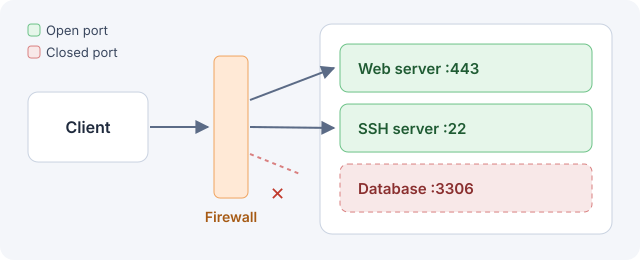

Learn what network ports are and how attackers find open services.
A port is a number that tells the operating system which program should receive incoming network traffic.
Each service listens on its own port: web servers usually use port 80 for HTTP and 443 for HTTPS, while SSH listens on port 22.

Attackers often start with a port scan to find out which services are exposed. A popular tool for this is Nmap:
nmap -sV -p 1-1000 10.10.10.10
The -sV flag asks Nmap to detect the version of each service, which helps you look for known vulnerabilities.
Which port does SSH use by default?